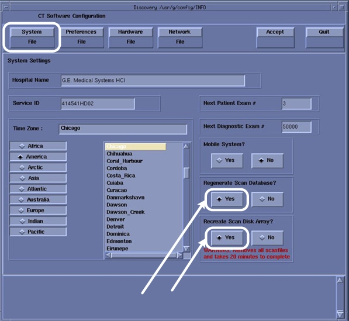

| NOTE: | If this Firmware Upgrade is being performed as part of a HSDA Hard Drive replacement, return to the HSDA Hard Drive Replacement procedure and continue with drive replacement. |
Open a Terminal Window, and log on as root.
Type: [root@hostname ~] reconfig <Enter>.
On System Tab of reconfig utility, select Yes for both [Regenerate Scan Database] and [Recreate Scan Disk Array].
Illustration 4: System Configuration “reconfig” - System Tab

Click Accept tab.
On Completion of the System Configuration “reconfig” Utility and Reboot is required. Click Yes in the Reboot Pop-Up Window.